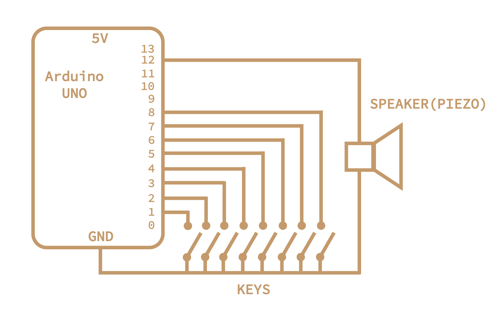

Week 5: Microcontroller Programming
Outline:
Unfortunately, I got sick over the weekend and didn't have as much time to fiddle with the physical Arduino microcontroller as I wanted. Will plan an update soon. However, I've done research on the coding side of things!
Keyboard:
Given my limited amount of time this week due to illness, I decided to design a simple keyboard. A button would be hooked up to a pin on the Arduino and play a note using the tone() function, which takes pin number, frequency, and intensity as arguments. Each button would be assigned to a specific note, with 8 buttons total to give a C major scale. The tone is output on a piezo. See code and circuit diagram below.
# Declare global variables
int notes[] = {65, 73, 82, 87, 98, 110, 123, 130};
int numButtons = 8;
int buttonPins[] = {1, 2, 3, 4, 5, 6, 7, 8};
int tonePin = 12;
void setup() {
Serial.begin(9600);
// Set button pins to mode INPUT_PULLUP
for (i=0; i < numButtons; i++) {
pinMode(buttonPins[i], INPUT_PULLUP);
}
}
void loop() {
// Loop through all buttons
for (i=0; i < numButtons; i++) {
int state = digitalRead(buttonPins[i]);
// If a button is pressed, play its corresponding note
if (state == LOW) {
tone(tonePin, notes[i]);
}
}
}
We start by defining global variables: the notes we will play, their corresponding pins, and the output pin. We then setup by connecting the Arduino to the computer and set each button pin to INPUT mode. Finally, in the loop, we check if each button has been pressed; if it has, we play its corresponding tone through the piezo. The circuit diagram was inspired by those in Arduino documentation and designed in Adobe Illustrator.
MIDI Controller:
Throughout high school, most of my time was spent on music. I've shifted away from that towards science in my years at Harvard, but generally consider music as a serious hobby. MIDI controllers are a great way to make music-making both more personal and customizable, but can get expensive. These are customized devices that send sound information to another computer, such as pitch, velocity, timbre, and more. Thus, I thought I'd do some research into making a MIDI controller from an Arduino. I was hoping to have a first pass at that by Tuesday, but it looks like it'll be completed closer to Thursday/Friday.
There seem to be great resources for sending MIDI signals from Arduino. However, some have not been recently updated and many are not compatible with the Arduino UNO. This led to a couple of frustrating moments where I designed a circuit, adapted code, but the package (MIDIUSB) was not compatible with the microcontroller unit.
In terms of resources I've been looking at, a few have been especially helpful. This guide by Nerd Musician gave a broad-scale overview of the process, and what tools/software are needed. I'll be using MIDI Monitor to check that my Arduino is actually sending MIDI signals, and a DAW (Digital Audio Workstation) such as Logic or Ableton to turn those signals into musical sounds. For the actual code, I believe MIDI Library works best with Arduino UNO, but is slightly outdated. I might just write my own MIDI convertor depending on how well this pre-existing package works. MIDI2 and MIDIUSB are other packages that are designed for other Arduino boards.
Update:
While I wasn't able to implement many of these ideas during the week I was first exploring them, these became especially important as I later worked on my MVP and final project. Sort of a dud week in terms of fabrication, but gave me the time to do research that launched my later ideas!